origine
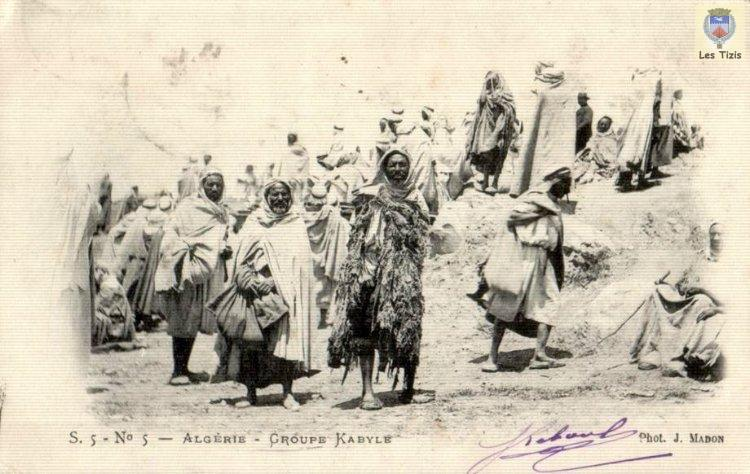
Le terme français « kabyle » (et sa berbérisation aqbayli) est emprunté à l'arabe qabīla (« tribu, famille »), dont le pluriel, qabāʾil, désigne les Kabyles. Qabīla est dérivé de la racine q-b-l qui, comme le verbe qabila, dénote la tribu, la famille. Les termes « Kabylie » et « Kabyle » se popularisent au milieu du XIXe siècle au moment où, prenant possession de l’Algérie, les Français (militaires, administrateurs puis chercheurs) ont éprouvé le besoin d’identifier les différentes régions de la colonie et les populations qui y étaient établies.
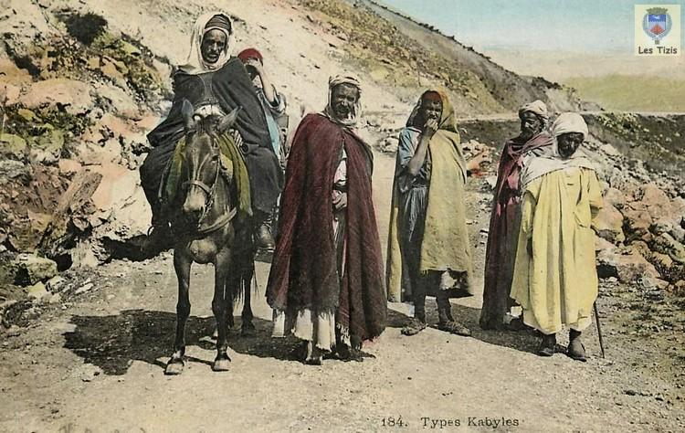
Le terme originel « Qaba'il », qui signifie en arabe « Tribus » est le terme que les Français utiliseront pour désigner ces montagnards qui portaient des noms différents en fonction de la tribu à laquelle ils appartenaient. Aussi pouvait-il plus rarement désigner aussi bien les berbères des Aurès que ceux de l'ouest algérien. On parlait alors de « Kabylie de l'Ouarsenis »17,18.
Le nom s'est ensuite restreint aux berbérophones de Kabylie19 et a pris une signification ethnique pour désigner ce peuple en particulier.
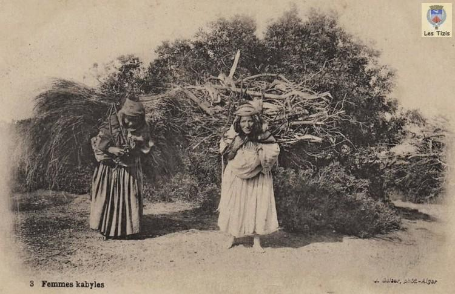
Le terme d’el Qbayl (sing. el Qbayli) a été adopté dans différentes régions du Maghreb et à différentes époques pour désigner des groupements tribaux particuliers. Il a ainsi été utilisé, à l’époque des Almoravides et des Almohades (xie et xiiie siècles), pour désigner les trois tribus masmouda qui occupaient alors la plaine de Marrakech, le Haouz d’aujourd’hui. Le terme devait sans doute s’étendre, à une période plus ancienne, à une région plus importante, puisque le terme taqbaylit (berbérisation d’el qbayliya) qui désigne l’idiome berbère des tribus de Kabylie est aussi utilisé par les Aït Menacer, Ichenouiyen (sous la forme haqbaylit) et Aït Salah20.
Le professeur Salem Chaker avance que le terme Zwawa/Zwawi utilisé par les arabophones ne devrait pas être relié à agawa/igawawen mais plutôt à Azwaw/Izwawen (prénom kabyle et nom de clan répandu en Kabylie). Salem Chaker soutient l'idée que Izwawen est le véritable nom ancien et autochtone des Kabyles qui, « comble de la dépression historique, ont presque oublié leur véritable nom »25. En outre, dans l’Ouest algérien, les Kabyles sont toujours désignés sous le nom de Zouaoua/Zouaoui26.
La totalité des kabyles se reconnaît dans le nom de Azwaw/Izwawen.
Selon la définition la plus courante en usage aujourd'hui en Algérie, le Kabyle est celui dont la langue maternelle est le kabyle, ou sinon dont les parents ont le kabyle pour langue maternelle.
Histoire
Antiquité
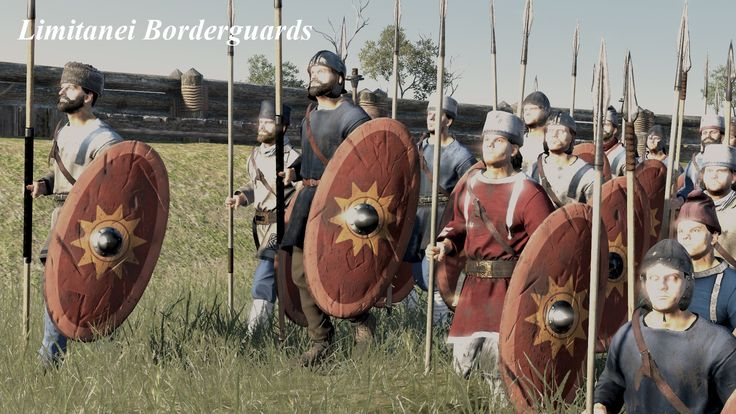
Dans l'Antiquité, les Kabyles sont organisés en confédérations que les Romains appellent Quinquegentiens et Bavares. L'historien Ammien Marcellin fait connaître les différentes tribus Quinquegentiennes sous les noms de Tendenses (Ifnaien), Mississenses (Imssissen), Isaflenses (Iflissen), lesalenses (Aït Irathen) et Jubaleni (dans les Bibans).
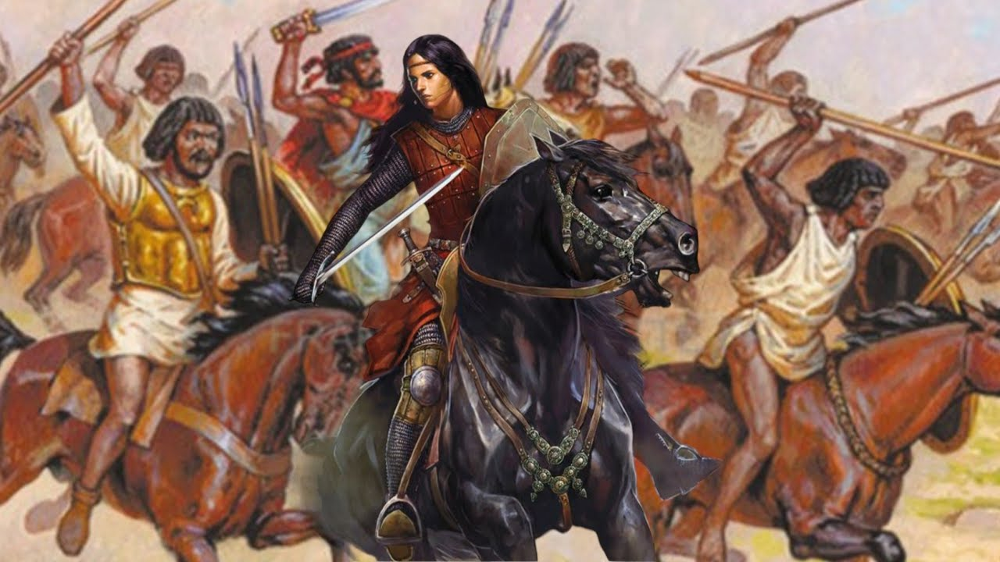
La Kabylie fait partie du royaume de Numidie33. Il est plus tard annexé par l'Empire romain, et est divisé entre les provinces d'Afrique et de Maurétanie césarienne. Les Romains puis plus tard les Byzantins contrôlent la route principale et la vallée, et évitent les montagnes (appelées Mont Ferratus, littéralement : montagnes de fer). Les Kabyles sont le fer de lance de nombreuses révoltes contre la domination impériale romaine dans la province, les plus dévastatrices étant celles des Quinquengentiens et leurs alliés Bavares, puis celle du chef Firmus3
Période arabe
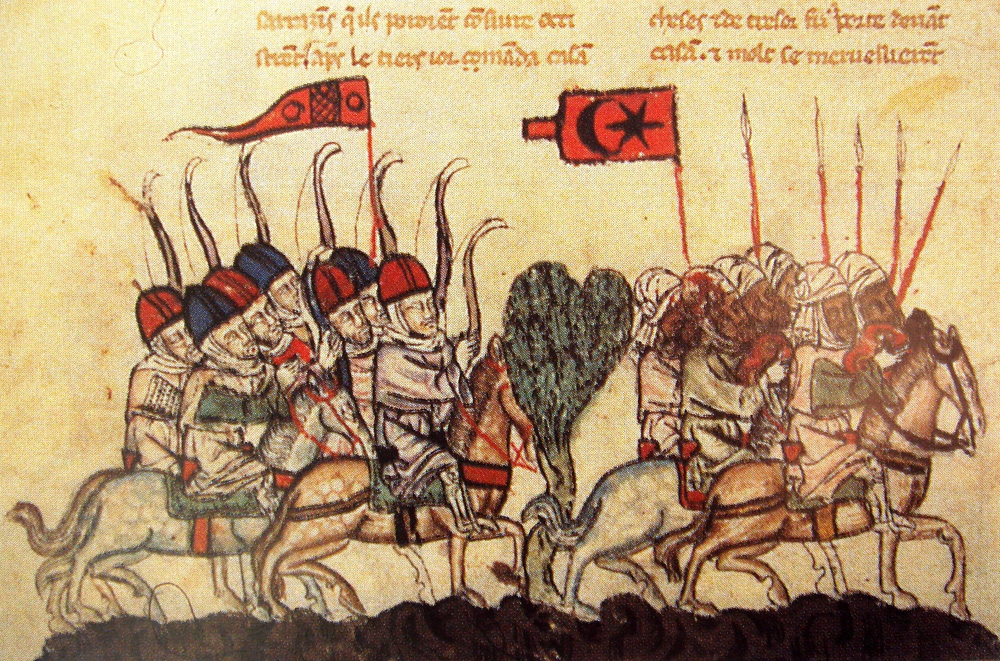
À la faveur de l'expansion de l'Islam au VIIIe siècle, les Omeyyades contrôlent des plaines en Kabylie, mais pas toutes les campagnes. Les montagnes autour de Béjaïa sont reconnues par les conquérants pour leur forte résistance (appelées en arabe : el aadua ou el ‘adua, en français : « l'ennemie »). L'Islam est introduit progressivement et pacifiquement sous l'impulsion de marabouts. En 743, suivant la Grande révolte berbère, et l’effondrement du califat Omeyyade, les Kabyles restent indépendants du joug de la nouvelle dynastie Aghlabide.
Période fatimide
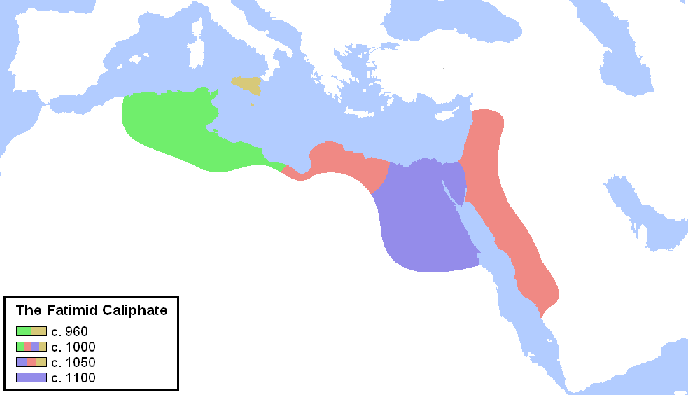
La dynastie des Fatimides fondée au xe siècle, a son centre d'origine situé en Petite Kabylie, où le dâ`i (signifiant « agent recruteur, propagandiste, apôtre ») ismaélien, Abou Abdallah al-Chii, a trouvé un public réceptif pour les croyances millénaires qu'il prêchait et a ensuite conduit, avec succès, la tribu kabyle Kutama à conquérir l'Ifriqiya (Tunisie actuelle, alors occupée par les Aghlabides), atomisant la présence arabe au Maghreb36, puis l'Égypte. Après avoir pris le contrôle de l'Égypte, les Fatimides perdent de l'intérêt pour le Maghreb, le chef sanhadja Bologhine ibn Ziri, hérite du contrôle de l'Ifriqiya (la Kabylie et une grande partie de l'Algérie, y compris la Tunisie moderne). La branche Ziride des Hammadides règne sur la place quelque deux siècles, avec un effet durable sur le développement non seulement de la Kabylie mais aussi de l'Algérie dans sa globalité, refondant des villes comme Béjaïa (sa capitale après l’abandon de Kalâa des Béni Hammad) et Alger, entre autres.
Une partie de la Kabylie des Babors (Jijel) sont originaires de deux tribus berbères, les Kutamas (sous la dynastie Fatimide), et les Sanhadja (sous la dynastie Hammadide). À cela il faut ajouter les berbères d'Andalousie qui se sont réfugiés à Béjaïa (Bougie), aidés par le sultan hammadide En-Nacer de Béjaïa au xie siècle.
Après l'effondrement des Hammadides, la Kabylie passe régulièrement sous le joug de diverses dynasties berbères, alors qu'une grande partie de l'intérieur n'est pas contrôlée efficacement. Les Espagnols, en pleine reconquista, en profitent, au début du xvie siècle, pour prendre pied dans les ports : Mers el-Kébir (1504), Oran (1509), Béjaïa (1512), Le Penon (en face d'Alger, en 1510). Menacés, les habitants appellent à leurs secours des corsaires turcs, les frères Barberousse. En 1516, ils prennent Alger, évincent le seigneur local et, quatre ans plus tard, instituent la régence et se placent sous la protection virtuelle du sultan ottoman37.
Époque ottomane
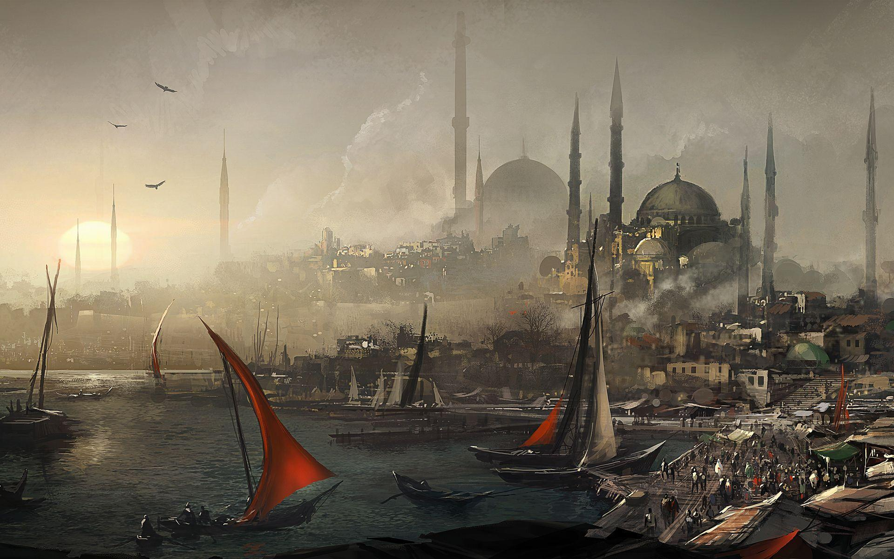
Sous le règne des Turcs ottomans, la majeure partie de la Kabylie est inaccessible aux Deys (gouverneurs de la régence d'Alger), qui doivent se contenter d'alliances militaires ou commerciales, de raids occasionnels et de colonies militaires dans certaines vallées. Dans les années précédant et suivant la période ottomane, la famille Belkadi gouverne longtemps la grande Kabylie, ayant pour capitale Koukou, aujourd'hui un petit village près de Tizi Ouzou ; mais son pouvoir décline au xviie siècle.
Les Kabyles sont relativement indépendants du joug ottoman pendant l'époque ottomane du Maghreb. Ils résident dans trois royaumes différents, le royaume de Koukou, le royaume des Aït Abbès, et la principauté des Aït Jubar38.
Les royaumes kabyles bénéficient d'une certaine reconnaissance internationale (représentations diplomatiques en Espagne, notamment). Dès 1512, le corsaire turc Arudj Barberousse se joint aux différentes tentatives kabyles de reprendre Béjaïa aux Espagnols grâce à leurs connaissances en navigation39. Les Kabyles alliés aux Ottomans reprennent Béjaia définitivement en 1555.
Époque contemporaine

La région est graduellement prise par les Français lors de leur conquête, à partir de 1857, malgré une résistance vigoureuse des Kabyles. Des chefs comme Lalla Fatma N'Soumer continuent la résistance plus longtemps, jusqu'à la révolte de Mokrani en 1871.
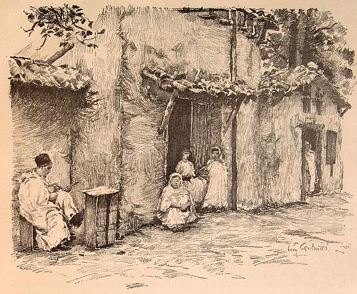
Les autorités françaises confisquent beaucoup de terres aux tribus les plus rebelles et les accordent aux colons, connus sous le nom de pieds-noirs. Pendant cette période, les Français procèdent à de nombreuses arrestations et déportations, principalement en Nouvelle-Calédonie (voir les Algériens du Pacifique). En raison de la colonisation française, de nombreux Kabyles émigrent dans d'autres régions à l'intérieur, et à l'extérieur de l'Algérie40. Au fil du temps, les travailleurs émigrés sont également allés en France.
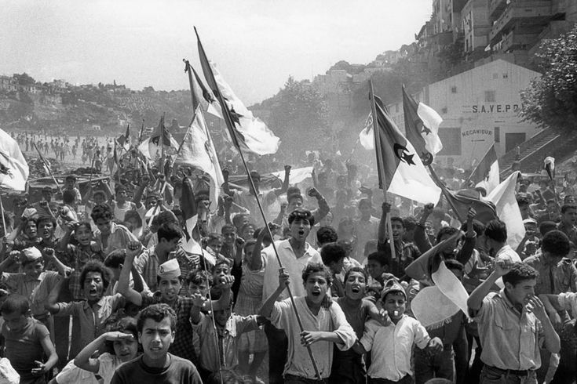
Dans les années 1920, les travailleurs immigrés algériens en France organisent le premier parti de promotion de l'indépendance. Messali Hadj, Amar Imache, Si Djilani et Belkacem Radjef sont très rapidement suivis en France et en Algérie dans les années 1930. Ils forment des militants devenus indispensables au combat pour une Algérie indépendante.
Depuis l'indépendance de l'Algérie, dont le signataire des accords d'Evian, du côté du FLN, est Belkacem Krim, des tensions apparaissent à plusieurs reprises entre la Kabylie et le gouvernement central. En 1963, le parti FFS de Hocine Aït Ahmed conteste l'autorité du FLN, qui s'impose comme le seul parti de la nation.
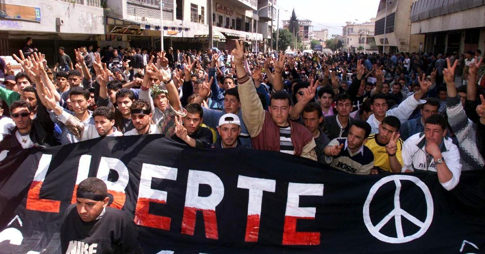
En 1980, plusieurs mois de manifestations ont lieu en Kabylie pour exiger la reconnaissance du berbère comme langue officielle ; cette période est appelée le Printemps berbère. En 1994-1995, un boycott scolaire a lieu, appelé « grève du cartable ». En juin et juillet 1998, des manifestations violentes ont lieu après l'assassinat du chanteur Matoub Lounès et contre la loi exigeant l'utilisation de la langue arabe dans tous les domaines.
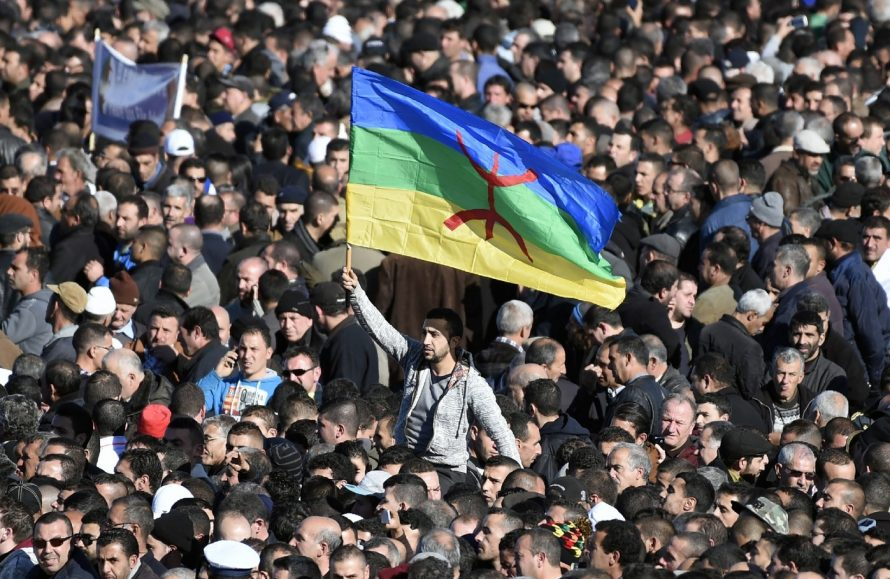
Dans les mois qui suivent avril 2001, de grandes émeutes (appelées Printemps Noir)- avec l'émergence du MAK, un mouvement souverainiste, et de l'Arouch, des conseils locaux néo-traditionnels, suivent l'assassinat de Massinissa Guermah, un jeune Kabyle, par des gendarmes. Les protestations diminuent progressivement après que les Kabyles ont obtenu des concessions du président Abdelaziz Bouteflika.
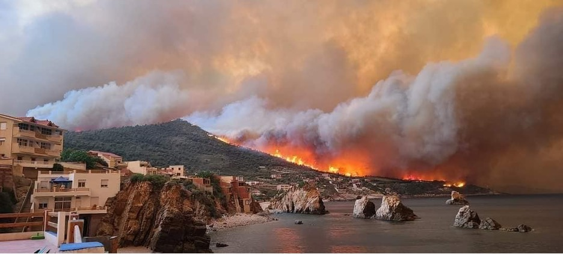
Du 9 au 17 août 2021, des feux de forêt, plusieurs étant d'origine criminelle, se déclarent en Kabylie causant la mort de plus de 200 personnes, la destruction de domiciles et la perte d'un écosystème de plusieurs dizaines de milliers d'hectares41,42,43,44. Par la suite, la diaspora a organisé des manifestations, notamment à Paris, le 10 Octobre 2021
population
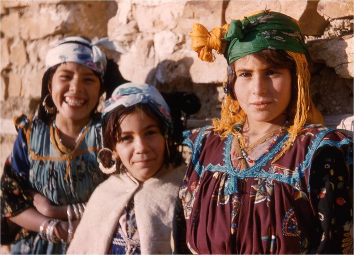
le nombre de Kabyles en Kabylie est donc d'environ 3,5 à 4 millions (1,2 million d'habitants dans la wilaya de Tizi Ouzou, 1 million dans la wilaya de Béjaia, les deux seules wilayas entièrement kabylophones, et environ 1,5 à 2 millions d'habitants dans les communes kabylophones des wilayas de Bouira, Boumerdès, Jijel, Bordj Bou Arreridj et Sétif).
En dehors de la Kabylie, les Kabyles sont nombreux à avoir migré vers d'autres régions d'Algérie, principalement Alger et ses environs, mais aussi dans une moindre mesure Oran et Constantine. Il est impossible de connaître leur nombre de façon précise, mais on peut l'estimer à environ 2 millions, sur deux générations.

Les Kabyles sont donc environ 5,5 à 6 millions en Algérie, soit environ 15 % de la population algérienne.
En dehors du pays, du fait d'une ancienne et forte émigration kabyle vers la France, les Kabyles représentent aujourd'hui environ 40 % des Algériens et descendants d'Algériens en France soit environ 800 000 Kabyles en France (sur 2 millions d'Algériens et enfants d'Algériens présents en France). Mais la France n'est pas la seule destination des Kabyles. Il y a aussi de grosses communautés kabyles au Canada et en Belgique.
L'organisation sociale
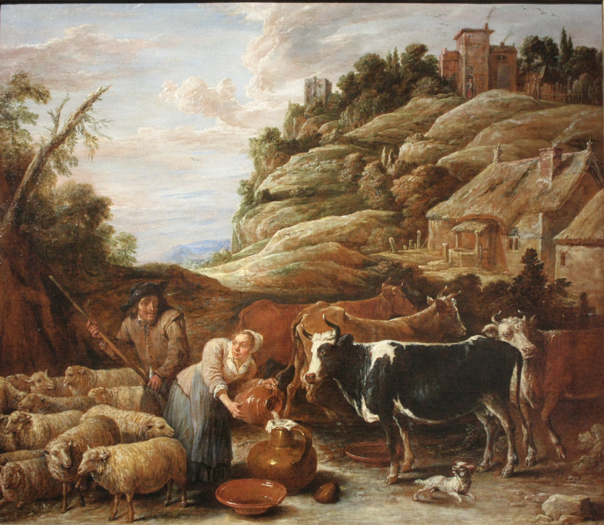
L'organisation sociale des Kabyles autrefois éleveurs et agriculteurs sédentaires a été abondamment étudiée, notamment par le sociologue français Pierre Bourdieu49. Ce modèle a été largement modifié par la forte émigration qui a bouleversé les rapports sociaux50, l'urbanisation, mais on peut tracer les grands traits de la société traditionnelle.
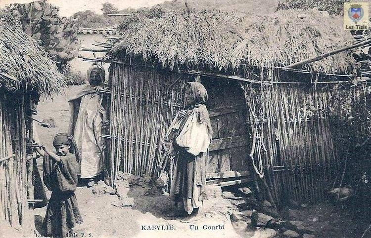
L’unité sociale de base de la société kabyle est la famille élargie, l'axxam (« le foyer »). La txarubt (« la faction ») est l’extension de la famille élargie, chaque composante de la faction se réfère à l'héritage symbolique d'un ancêtre de lignée paternelle. La txarubt assure l'intégrité de chaque individu et la défense de l'honneur du nom en commun, avant l'introduction du nom patronymique par l'administration coloniale, c'était le moyen d'identification le plus utilisé.
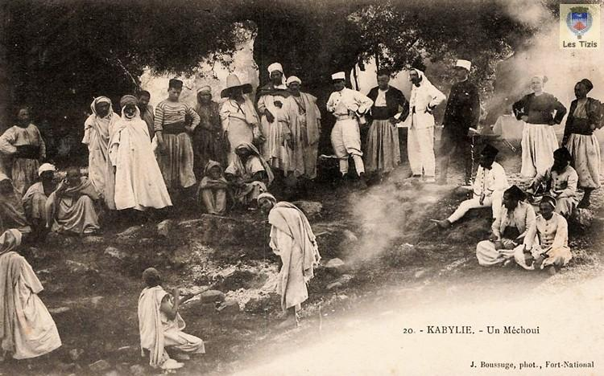
Dans certains villages importants (tudart), il y a une structuration par quartier qui regroupe différentes factions (tixarubin), c'est l'adrum. C'est l'ensemble de ces quartiers qui forment le village. Plusieurs villages peuvent s'unir et former laarch (« la tribu »), un ensemble de tribus donne une taqbilt (« une confédération »), qui donnera son nom aux berbères de la région appelés kabyles51.
Chaque village formait une tajmaât (« une assemblée »), une petite ou grande organisation selon l'importance numérique du village, semblable à la république démocratique52. Elle était composée de tous les hommes ayant atteint la majorité, et en principe tout citoyen, quelle que soit sa condition socio-économique, pouvait y prendre la parole pour exposer ses idées et prendre position lors des propositions de résolutions. Les vieillards, à qui l'on attribuait le titre d’imgharen, parce qu'ils étaient chefs de famille ou même de la lignée vivante, bénéficiaient d'un respect particulier et d'une grande écoute, aussi accordait-on à leurs décisions dans la tajmaât une plus grande importance, et la démocratie kabyle s'apparentait parfois davantage à une gérontocratie.
On y nommait l’amin (« chef ») (ou l’ameqqran, « l'ancien », suivant les régions) qui était chargé du bon déroulement de l'assemblée et de la mise en application de ses décisions. Pour les plus grandes tajmaât, le chef était parfois assisté dans ses fonctions par un uqil et plusieurs t'emen53. L'uqil avait la responsabilité des revenus de la tajmaât, et avait en plus un droit de regard sur les décisions du chef. Il appartenait en général à un çof (« ligue », alliance de plusieurs tribus54) opposé à celui du chef, constituant un véritable contrepoids au pouvoir exécutif, ce qui assurait une certaine stabilité politique53. Le t'emen, sorte de «député-maire », représentait son çof lors des réunions et transmettait les décisions. Conseil municipal, cour de justice et cour souveraine, la tajmaât se référait, en cas de litige ou de problème, à des textes de lois, les « qanôun kabyles »55, la plus haute autorité juridique, qui définissaient le moindre manquement et sa sanction56.
Le code de l'honneur protégeait « la maison, les femmes, les fusils » et stipulait que le meurtre devait être vengé par les liens du sang (les auteurs de ces actes y compris les vengeurs étaient rejetés de la communauté). La filiation est patrilinéaire. Le patronyme de l'ancêtre commun se transmettait. La tajmaât vivait sous l'autorité du groupe, où l'esprit de solidarité est fort développé. Pour exemple le terme tiwizi (« solidarité ») désigne l'activité collective consistant à aider un villageois dans une de ses tâches comme le ramassage des olives57, à laquelle il contribue directement ou en nourrissant les participants.
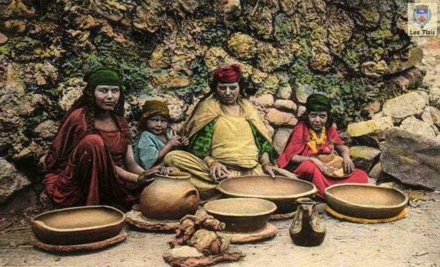
Rectificatif : le terme djemâa, que les Kabyles ont intégré en tajmaât en le berbérisant, est un mot d'origine arabe ; le mot exact en kabyle est plutôt agraw qui signifie assemblée.
Le çof se rapporte non pas à un clan mais à une ligue, le clan est une organisation qui se rapporte à une famille élargie, comme la tribu, alors qu'un çof peut être changeant58.
Culture
Langue
La culture kabyle est une composante de la culture algérienne, maghrébine et méditerranéenne. La spécificité linguistique de la région s'illustre notamment par ses traditions, sa musique et son folklore.
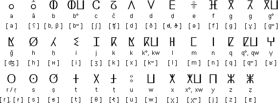
La langue kabyle taqbaylit, textuellement "la (langue) kabyle" (ⵜⴰⵇⵀⴰⵢⵍⵉⵜ) (Tifnaɣ traditionnels ⵜⵈⵀⵉⵍⵜ) ou tazwawt (ⵜⴰⵣⵡⴰⵡⵜ) (Tifinaɣ traditionnels ⵜⵣⵓⵓⵜ) se rattache aux langues berbères qui comportent plusieurs variantes. Très attachés à leur identité berbère, les Kabyles se réclament en fait de la langue Tamaziɣt, une langue officielle en Algérie depuis le 1er janvier 2016.
Taqbaylit/tazwawt (« la kabylité ») signifie aussi, dans la sémantique kabyle en général, la référence à un système de valeurs ancestrales (code de l'honneur), non contradictoire de l'esprit du clan (çof), qui régulent et gèrent la vie collective à l'échelle d'un village ou d'une tribu ou confédération.
Religion
Selon Armand Viré « les Kabyles professent tous la même religion, l'Islam », influencé par le soufisme59, comme le soulignaient aussi Adolphe Hanoteau et Aristide Letourneux60. Selon Mouloud Mammeri la confrérie Rahmaniya est l'une des plus puissantes confréries soufi d'Algérie.
Avant l'acceptation de l'islam par les Kabyles, la Kabylie a connu l'ensemble des religions du bassin méditerranéen sans pour autant les avoir pratiquées, ayant même contribué, comme partie intégrante du monde berbère, à la fourniture de quelques dieux et déesses aux Grecs et aux Romains et aux Égyptiens, telle que Antée. D'abord dévoués a un Dieu nommé Yakuc qui était le Dieu probablement de tous les Berbères étant donné que ce nom se retrouve sous différentes formes d'un bout à l'autre du Maghreb et est toujours employé au Mzab dans certaines incantations, la religion des Kabyles repose sur une cosmogonie précise et très élaborée encore connue des vieillards. Peu d'ouvrages ont été faits à propos de la cosmogonie kabyle, on a celui de l'anthropologue Léo Frobenius dans son tome 1 en allemand traduit en français par Muqran Fetta en "contes kabyles". Le culte se concentrait donc autour d'un Dieu unique et transcendant, Yakuc mais aussi d'un monde invisible de gardiens sentinelles des lieux (iɛassassen/inaḍafen) et des esprits (aharayruc, pl. iharayrac/djinn, pl. ledjnun), les croyances en de nombreuses créatures mythologiques, monstrueuses et/ou bienfaisantes faisaient aussi partie de la religion des Kabyles. Beaucoup de représentations rupestres préhistoriques ainsi que des figurations rupestres et stèles libyques montrent que ce culte remonte à une période très ancienne61.
Une minorité chrétienne évangélique est en développement important dans les années 2000 et 201062,63.
Politique et laïcité
Selon Yidir Plantade, la Kabylie comme le reste du Maghreb est restée attachée au cours de son histoire à une religiosité populaire avec des figures locales comme les saints et les marabouts73. Pour lui, déjà avant la venue française, la société kabyle est « à mi-chemin entre religiosité profonde et sécularisme pré-moderne », cependant il parle de la laïcité comme un élément exogène à la Kabylie et il considère la culture laïque comme importée d'outre-Méditerranée par l'école républicaine française74. Il note cependant le fait que, lors de la colonisation française, ces idées ont marqué profondément les Kabyles qui fréquentaient les écoles coloniales. Il décrit ces nouvelles élites comme « modelée par l'école et par l'administration française »75. Ces mouvements laïques après avoir séduit la population dans les années 1960 avec l'émergence du mouvement berberiste connaissent un déclin. Selon l'auteur, face à l'impasse dans laquelle ce mouvement laïque est engagé on assiste à un regain de religiosité en Kabylie surtout de la part de la jeunesse
Musique

La variété kabyle (moderne ou traditionnelle) est l'une des musiques les plus importantes en Algérie. De nombreux artistes sont natifs de Kabylie ou d'origine kabyle, notamment Kamel Hamadi, Mohamed Iguerbouchène, Rabah Taleb, Farid Ferragui, Cherif Kheddam, Rabah Asma, Lounis Aït Menguellet, Nouara, Brahim Izri, Massa Bouchafa, Djamila, Lounès Matoub, Youcef Abdjaoui, Idir, Slimane Azem, Chérifa, Malika Domrane, Yasmina, Bahia Farah, DjurDjura, Ideflawen, Tagrawla, Amzik, Cheikh Sidi Bémol, Abranis, Ali Amran, Souad Massi, Djamel Allam, Salah Sadaoui, Allaoua Zerrouki, Cheikh Sadek El Béjaoui, Amar Ezzahi, Boudjemaâ El Ankis, Boudjemâa Agraw, Takfarinas, Aït Meslayene, Cheikh El Hasnaoui, Mouloud Zedek, Oulahlou, Ferhat Mehenni, etc.
La Kabylie a donné aussi quelques grands noms au chaâbi algérien comme notamment Hadj M'hamed El Anka, Kamel Messaoudi, Abdelkader Chaou, etc.
Théâtre et cinéma

Le cinéma algérien se souviendra de Rouiched, un Algérois qui trouve ses racines dans les villages de Kabylie et a réuni, comme personne d'autre, les Algériens dans les salles de cinéma et de théâtre pendant plus de 40 ans. Mohamed Fellag, natif de Azeffoun, brilla durant ses débuts dans les salles de théâtre d'Alger avant d'émigrer par peur des intégristes. Il changea de public et trouva dans l'émigration algérienne et maghrébine nombre de fans. L'un des cinéastes kabyles les plus prolifiques est incontestablement Abderrahmane Bouguermouh. Il est connu pour avoir adapté au cinéma le roman de Mouloud Mammeri, La Colline oubliée (en kabyle : Tawrirt yettwattun), et réalisé également un documentaire sur les événements du 8 mai 1945. Il y a aussi la réalisatrice Habiba Djahnine, en particulier son documentaire Lettre à ma sœur, évoquant l'assassinat de sa sœur Nabila Djahnine et les droits des femmes durant la Décennie noire, ou encore le réalisateur Azzedine Meddour notamment pour le film La Montagne de Baya.
Peinture

M'hamed Issiakhem, Hamid Tibouchi sont deux peintres et calligraphes qui ont marqué la scène algérienne et internationale par leurs œuvres, qui, pour le premier, s'inspirent plus de la guerre d'Algérie85 avec notamment la peinture "Résurrection du Chahid (1978)"85, et de la culture Amazigh comme le tableau "Paysage de Kabylie (1960)". Ces inspirations que l'on dénote particulièrement dans certaines œuvres d'Hocine Ziani à l'image de La Reine Tin Hinan.
Sculpture
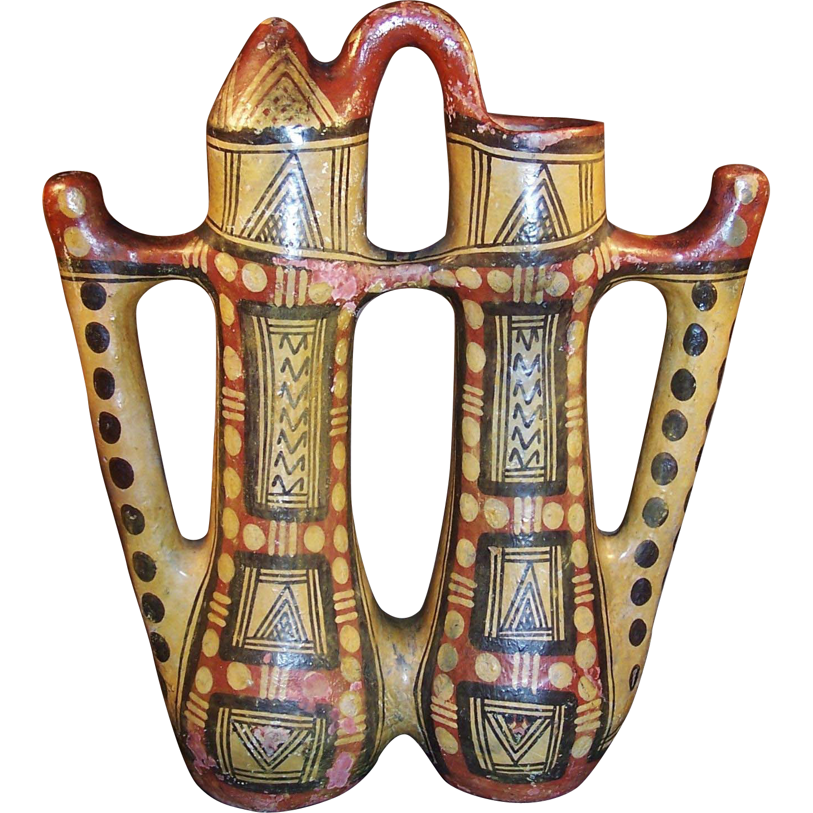
Bâaziz Hammache Artiste Sculpteur kabyle connu pour ses œuvres des statues place au 4 coins de l'Algérie majoritaire en kabylie tel que Bougie de Tizi Ouzou et le sculpteur Olivier Graïne Artiste sculpteur kabyle connue par son œuvre la statue de Mouloud Mammeri et Le Jardin des Artistes situé à Ait Yenni.
Sport
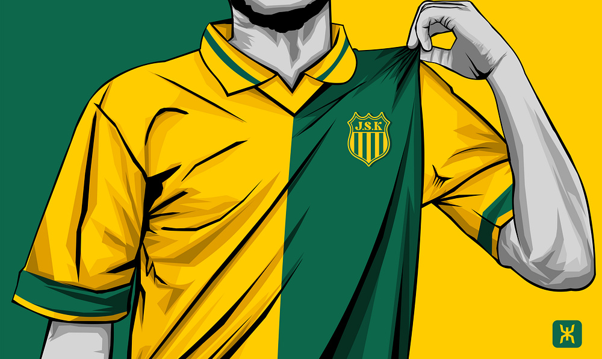
Les Kabyles sont représentés par des sportifs tels Mouloud Iboud, Mohand Chérif Hannachi, Ali Fergani, Moussa Saïb, Rachid Mekloufi, Zinédine Zidane, Rabah Madjer, Yacine Adli86, Kheira Hamraoui, Mustapha Dahleb, Salah Assad, Mehdi Tahrat, Nouria Benida-Merah, Samir Aït Saïd, Larbi Benboudaoud, Soraya Haddad, Sarah Ourahmoune, Loucif Hamani, Chérif Hamia, etc. Les clubs de foot tels la JSK (Jeunesse sportive de Kabylie), la JSMB et le MO Béjaïa sont les clubs principaux de la région, aussi la région est connue pour le Volley-Ball notamment à Béjaïa.
Littérature

- Mohand Idir Aït Amrane
- Arezki Ait Larbi
- Salima Aït Mohamed
- Rachid Aliche
- Taos Amrouche
- Mohamed Arkoun
- Mohand Arab Bessaoud
- Si Amar Ou Said Boulifa
- Salem Chaker
- Tahar Djaout
- Nabile Farès
- Mouloud Feraoun
- Salima Ghezali
- Malek Haddad
- Amar Imache
- Youcef Ou Kaci
- Saïd Cid Kaoui
- Mohand Amokrane Khelifati
- Mouloud Mammeri
- Smaïl Medjeber
- Ferhat Mehenni
- Malek Ouary
- Mohya
- Saïd Saadi
- Abdelmalek Sayad
- Tassadit Yacine
- Smaïl Yefsah
- Salem Zenia